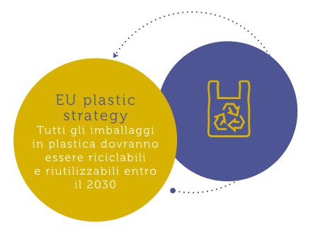
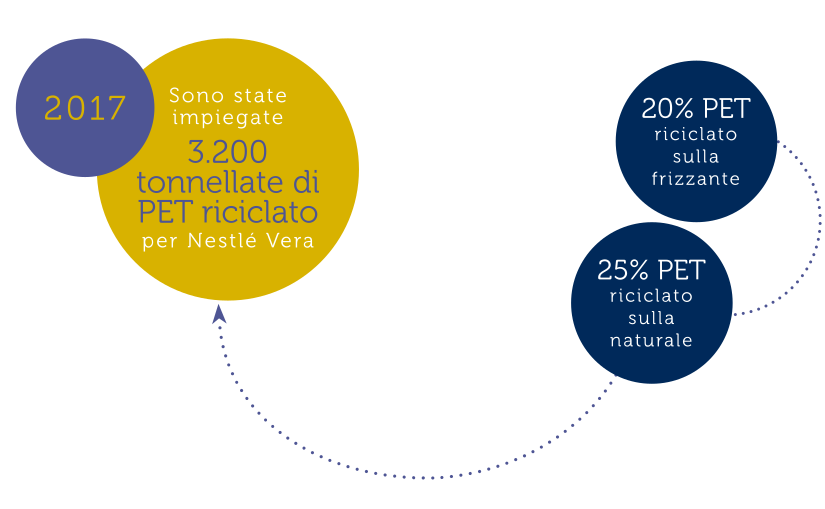
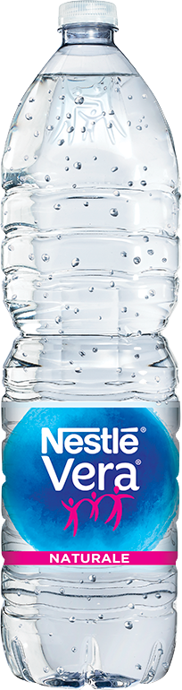
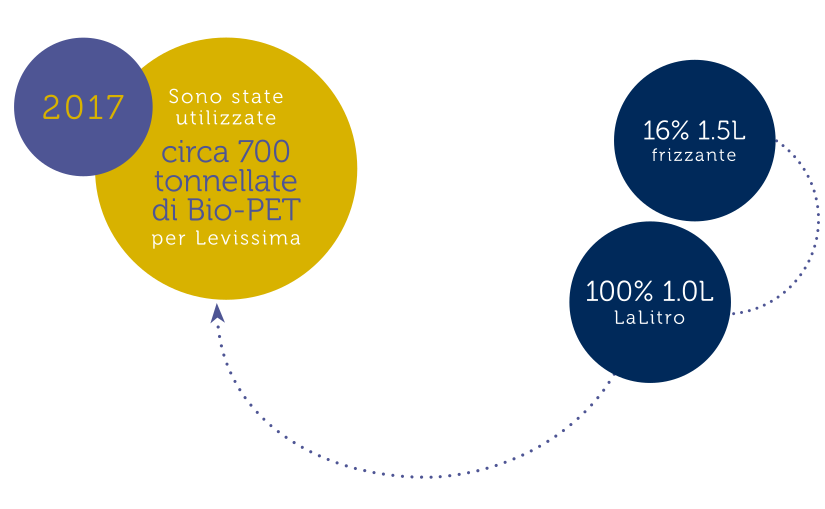
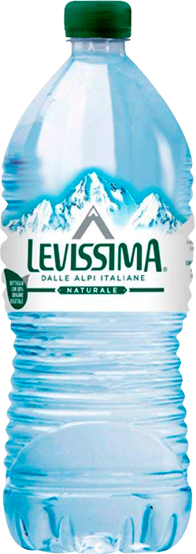
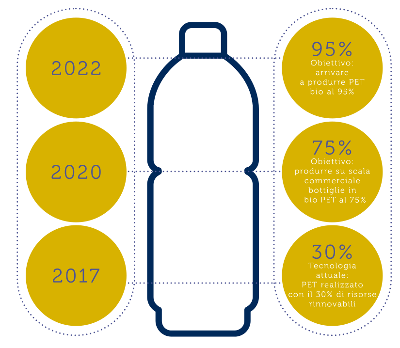

Il tema del fine vita dei prodotti è sempre più rilevante e centrale in un approccio circolare all’economia.
Per questo il Gruppo lavora a monte e a valle della filiera con una visione olistica che mira contemporaneamente a ridurre l’immesso al consumo, sensibilizzare i cittadini sulla corretta raccolta differenziata, aumentare le performance di riciclo e trovare materiali alternativi.
CORIPET. IL BELLO DEL PET
Migliorare la qualità e la quantità della raccolta delle bottiglie in PET post-consumo sono gli scopi del Coripet, consorzio volontario per il recupero e l’avvio a riciclo dei contenitori in PET per liquidi alimentari, formato da cinque aziende produttrici di acque minerali e bevande analcoliche, tra cui il Gruppo Sanpellegrino e tre aziende di riciclo di PET.
L’obiettivo è recuperare dal primo anno almeno il 60% del PET immesso sul mercato attraverso i prodotti venduti dalle aziende consorziate, per poi mirare a raggiungere il 90% entro il 2025.
ZERO WASTE
Nel 2017, il Gruppo Sanpellegrino ha avviato al riciclo, al riuso o al compostaggio oltre il 90% dei rifiuti prodotti nei siti produttivi nell’ambito del piano Zero Waste for Disposal, grazie ad una attenta selezione alla raccolta ed alla ottimizzazione della filiera.
EDUCAZIONE AL RICICLO.
I PROGRAMMI DAL 2012
Il Gruppo è da sempre impegnato nell’educare i cittadini e le nuove generazioni a una corretta gestione della raccolta differenziata.
“Io faccio la differenza” si occupa dal 2012 di promuovere la raccolta differenziata del PET sulle piste da sci dell’alta Lombardia, coinvolgendo direttamente sia il pubblico, sia gli attori locali.
R-Generation ha coinvolto gli alunni delle scuole primarie delle principali città italiane come Milano, Torino, Firenze, Roma e Napoli. Ai bambini è stato proposto un concorso itinerante pensato per stimolare la loro sensibilità sull’importanza del PET, su come utilizzarlo e smaltirlo nel modo corretto.
R-PET
L’approccio bottle to bottle in azione
Il Gruppo Sanpellegrino è stato il primo in Italia ad utilizzare il PET riciclato aumentandone progressivamente l’impiego.
Lavorando sul cosiddetto ‘light weighting’, dal 2008 sono state risparmiate 6.000 tonnellate di PET.
 BIO-PET
L’innovazione vegetale
Dopo anni di ricerca e impegno per l’ambiente, Levissima è stata la prima a utilizzare un BIO-PET di origine vegetale, che nasce da la lavorazione della canna da zucchero per offrire una bottiglia leggera, infrangibile, perfettamente igienica e adatta anche al gasato.
Un packaging 100% riciclabile e riutilizzabile.
 ALLEANZA GLOBALE PER UN PET 100% BIO
Danone e Nestlé Waters, le due aziende leader nel settore dell’acqua in bottiglia nel mondo, hanno unito le forze con Origin Materials - azienda biotecnologica californiana - e recentemente con PepsiCo, dando vita a NaturALL Bottle Alliance.
Insieme, i partner puntano a sviluppare e commercializzare una bottiglia in plastica PET di origine bio, realizzata al 100% con risorse sostenibili e rinnovabili.
La tecnologia rappresenta una vera e propria innovazione scientifica per il settore e verrà resa disponibile a tutta l’industria food and beverage.
